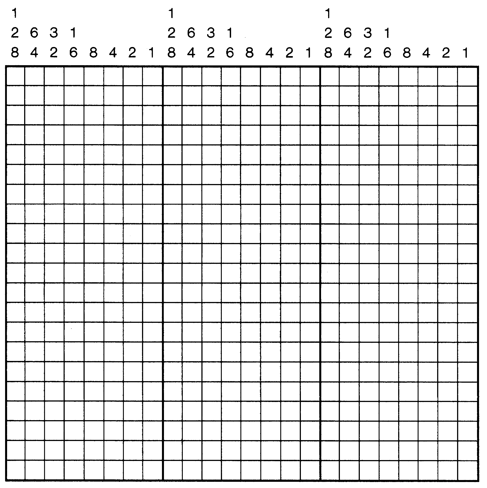
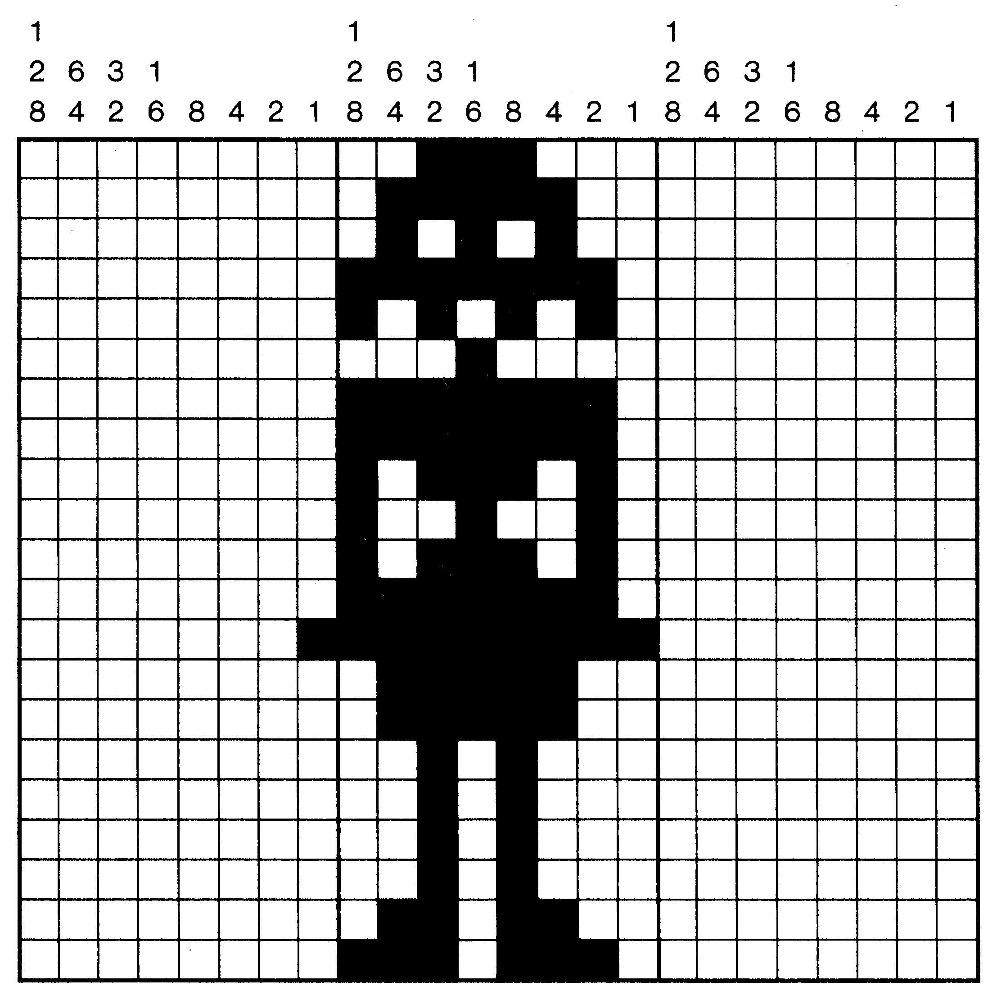
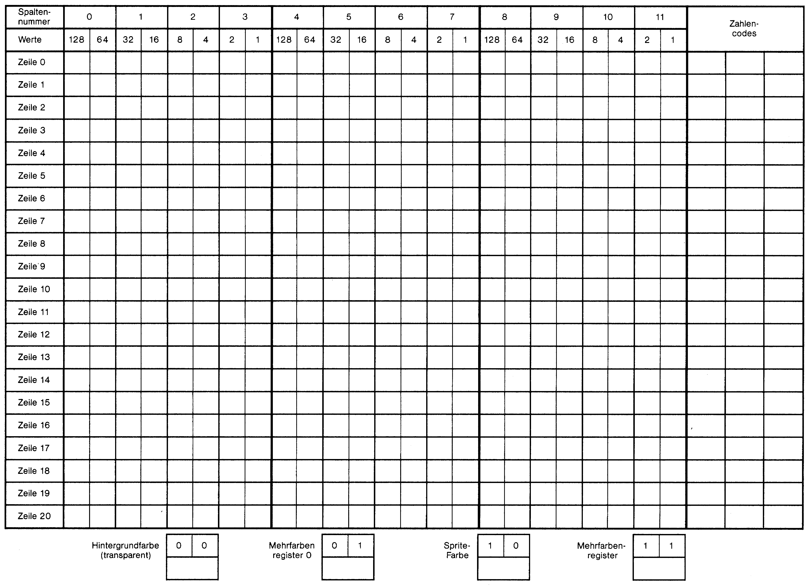
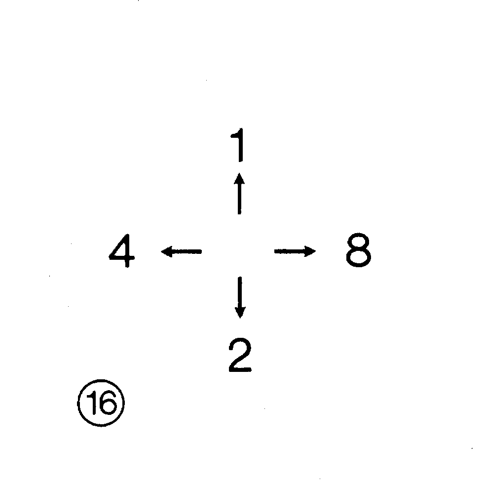

Der leichte Umgang mit Sprites
Über Sprites wird immer wieder geredet, wenn es um den C 64 geht. Wie werden sie erstellt, auf den Bildschirm gebracht und bewegt? Hier soll nun alles über die »legendären« Sprites gesagt werden.
Wie bringt man Sprites auf den Bildschirm, wie werden sie gesteuert oder durch ein Programm beeinflußt? Hier erfahren Sie die Grundlagen, mit denen Sie Sprites erstellen und steuern können.
Ein Sprite ist ein frei definierbares, eigenständiges Zeichen, das auf dem Bildschirm dargestellt, bewegt und verändert werden kann, unabhängig vom jeweiligen Hintergrund. Das bedeutet nichts anderes, als daß ein Sprite auf jedem Hintergrund (Text- oder Grafikbildschirm) sichtbar werden kann. Ebenso ist es möglich, das Sprite vor oder hinter den Bildschirmzeichen zu bewegen. In der einfarbigen Darstellung betragen die Ausmaße 24*21 Pixel (Bildschirmpunkte), in mehrfarbiger Darstellung (Multicolor) schrumpfen dieses auf 12*21 Pixel (schrumpfen deshalb, da bedingt durch die Farbdarstellung zwei Punkte je sichtbarem Punkt herhalten müssen). Wie lassen sich aber jetzt die Sprites erzeugen und bewegen? Dazu müssen wir etwas über den Baustein erfahren, durch den dies alles erst machbar wird:
Der VIC (Video-Interface-Controller)
Den Namen trägt dieser Baustein zu Recht. Er kümmert sich nicht nur darum, die 40 * 25 Zeichen auf dem Bildschirm darzustellen, er sorgt auch für die hochauflösende Grafik und für einige computerinterne Steuerungen. Zu guter Letzt bringt er die Sprites auf den Bildschirm.
Gesteuert wird er über die Register des Video-Bereiches. Diese sind nichts weiter als die Speicherplätze des VICs. Sie beginnen ab der Adresse 53248 (Register 0) und enden bei 53294 (Register 46). In Tabelle 1 sehen Sie eine Übersicht über alle Videochip-Register mit den jeweiligen Funktionen.
| Register | Adresse | Bit 7 | Bit 6 | Bit 5 | Bit 4 | Bit 3 | Bit 2 | Bit 1 | Bit 0 | |
|---|---|---|---|---|---|---|---|---|---|---|
| dezimal | hex | |||||||||
| 0 | 53248 | $D000 | X-Position Sprite Nr. 0 | |||||||
| 1 | 53249 | $D001 | Y-Position Sprite Nr. 0 | |||||||
| 2 | 53250 | $D002 | X-Position Sprite Nr. 1 | |||||||
| 3 | 53251 | $D003 | Y-Position Sprite Nr. 1 | |||||||
| 4 | 53252 | $D004 | X-Position Sprite Nr. 2 | |||||||
| 5 | 53253 | $D005 | Y-Position Sprite Nr. 2 | |||||||
| 6 | 53254 | $D006 | X-Position Sprite Nr. 3 | |||||||
| 7 | 53255 | $D007 | Y-Position Sprite Nr. 3 | |||||||
| 8 | 53256 | $D008 | X-Position Sprite Nr. 4 | |||||||
| 9 | 53257 | $D009 | Y-Position Sprite Nr. 4 | |||||||
| 10 | 53258 | $D00A | X-Position Sprite Nr. 5 | |||||||
| 11 | 53259 | $D00B | Y-Position Sprite Nr. 5 | |||||||
| 12 | 53260 | $D00C | X-Position Sprite Nr. 6 | |||||||
| 13 | 53261 | $D00D | Y-Position Sprite Nr. 6 | |||||||
| 14 | 53262 | $D00E | X-Position Sprite Nr. 7 | |||||||
| 15 | 53263 | $D00F | Y-Position Sprite Nr. 7 | |||||||
| 16 | 53264 | $D010 | Sprite 7, msb X-Position | Sprite 6, msb X-Position | Sprite 5, msb X-Position | Sprite 4, msb X-Position | Sprite 3, msb X-Position | Sprite 2, msb X-Position | Sprite 1, msb X-Position | Sprite 0, msb X-Position |
| 17 | 53265 | $D011 | msb des Rasterregisters (Reg. 18) | Schaltbit für veränderten Hintergrundfarbmodus 1 = eingeschaltet |
Schaltbit für Hochauflösungsmodus 1 = eingeschaltet |
Schaltbit für Schirm löschen 0 = gelöscht |
Schaltbit für Zeilenzahl 0 = 24 Zeilen 1 = 25 Zeilen |
Wert der Zeilenverschiebung in Y-Richtung beim Smooth Scrolling | ||
| 18 | 53266 | $D012 | Rasterregister. Dazu kommt das msb in Bit 7, Register 17 | |||||||
| 19 | 53267 | $D013 | Lichtgriffel X-Position | |||||||
| 20 | 53268 | $D014 | Lichtgriffel Y-Position | |||||||
| 21 | 53269 | $D015 | Ein- und Ausschalten von Sprites. 0 = Sprite aus, 1 = Sprite an | |||||||
| Sprite 7 | Sprite 6 | Sprite 5 | Sprite 4 | Sprite 3 | Sprite 2 | Sprite 1 | Sprite 0 | |||
| 22 | 53270 | $D016 | (unbenutzt) | Reset-Bit, muß 0 sein, damit VIC-II-Chip arbeitet | Schaltbild für Mehrfarbmodus 1 = eingeschaltet |
Schaltbit für Spaltenzahl 0 = 38 Spalten 1 = 40 Spalten |
Wert der Spaltenverschiebung in X-Richtung beim Smooth Scrolling | |||
| 23 | 53271 | $D017 | Sprite-Vergrößerung in Y-Richtung. 0 = normale Größe, 1 = doppelte Größe | |||||||
| Sprite 7 | Sprite 6 | Sprite 5 | Sprite 4 | Sprite 3 | Sprite 2 | Sprite 1 | Sprite 0 | |||
| 24 | 53272 | $D018 | Startadresse Textbildschirm | Startadresse Zeichengenerator oder HiRes-Bitmap | (unbenutzt) | |||||
| 25 | 53273 | $D019 | Interrupt-Flag-Register | Lichtgriffel-Interrupt-Flag | Sprite/Sprite-Kollision | Sprite/Hintergrund-Kollision | Raster-Interrupt-Flag | |||
| 26 | 53274 | $D01A | Interrupt-Masken-Register | Lichtgriffel-Interrupt | Sprite/Sprite-Kollision | Sprite/Hintergrund-Kollision | Raster-Interrupt-Maske | |||
| 27 | 53275 | $D01B | Sprite/Hintergrund-Prioritätenregister. 0 = Sprite hat Priorität, 1 = Hintergrund hat Priorität | |||||||
| Sprite 7 | Sprite 6 | Sprite 5 | Sprite 4 | Sprite 3 | Sprite 2 | Sprite 1 | Sprite 0 | |||
| 28 | 53276 | $D01C | Sprite-Mehrfarbmodus-Register. 0 = Normaldarstellung, 1 = Mehrfarbmodus-Darstellung | |||||||
| Sprite 7 | Sprite 6 | Sprite 5 | Sprite 4 | Sprite 3 | Sprite 2 | Sprite 1 | Sprite 0 | |||
| 29 | 53277 | $D01D | Sprite-Vergrößerung in X-Richtung. 0 = normale Größe, 1 = doppelte Größe | |||||||
| Sprite 7 | Sprite 6 | Sprite 5 | Sprite 4 | Sprite 3 | Sprite 2 | Sprite 1 | Sprite 0 | |||
| 30 | 53278 | $D01E | Sprite/Sprite-Kollision. 0 = keine Berührung. 1 = Berührung | |||||||
| Sprite 7 | Sprite 6 | Sprite 5 | Sprite 4 | Sprite 3 | Sprite 2 | Sprite 1 | Sprite 0 | |||
| 31 | 53279 | $D01F | Sprite/Hintergrund-Kollision. 0 = keine Berührung, 1 = Berührung | |||||||
| Sprite 7 | Sprite 6 | Sprite 5 | Sprite 4 | Sprite 3 | Sprite 2 | Sprite 1 | Sprite 0 | |||
| 32 | 53280 | $D020 | (unbenutzt) | Farbe des Bildschirmrahmens | ||||||
| 33 | 53281 | $D021 | (unbenutzt) | Hintergrundfarbe Nr. 0 (normale Hintergrundfarbe) | ||||||
| 34 | 53282 | $D022 | (unbenutzt) | Hintergrundfarbe Nr. 1 | ||||||
| 35 | 53283 | $D023 | (unbenutzt) | Hintergrundfarbe Nr. 2 | ||||||
| 36 | 53284 | $D024 | (unbenutzt) | Hintergrundfarbe Nr. 3 | ||||||
| 37 | 53285 | $D025 | (unbenutzt) | Sprite-Mehrfarben-Register Nr. 0 | ||||||
| 38 | 53286 | $D026 | (unbenutzt) | Sprite-Mehrfarben-Register Nr. 1 | ||||||
| 39 | 53287 | $D027 | (unbenutzt) | Sprite 0, Farbe | ||||||
| 40 | 53288 | $D028 | (unbenutzt) | Sprite 1, Farbe | ||||||
| 41 | 53289 | $D029 | (unbenutzt) | Sprite 2, Farbe | ||||||
| 42 | 53290 | $D02A | (unbenutzt) | Sprite 3, Farbe | ||||||
| 43 | 53291 | $D02B | (unbenutzt) | Sprite 4, Farbe | ||||||
| 44 | 53292 | $D02C | (unbenutzt) | Sprite 5, Farbe | ||||||
| 45 | 53293 | $D02D | (unbenutzt) | Sprite 6, Farbe | ||||||
| 46 | 53294 | $D02E | (unbenutzt) | Sprite 7, Farbe | ||||||
Sie werden jetzt wahrscheinlich etwas verwirrt sein und sich fragen, was Sie mit dieser Tabelle anfangen sollen? Deshalb nun einige Erklärungen:
Die Register sagen dem VIC, wo, wie und ob überhaupt Sprites aktiviert werden sollen. Indem verschiedene Werte in die jeweiligen Register geschrieben (gePOKEt) werden, kann der Videoprozessor in seiner Funktion gelenkt werden.
Zuerst müssen Sie wissen, was die einzelnen Register des Video-Chips in ihrer Funktion bedeuten. Gehen wir sie der Reihe nach durch:
Register 0 bis 15: Hier wird die Position der einzelnen Sprites auf dem Bildschirm festgelegt. Je ein Registerpaar (0/1, 2/3 ...) ist für ein Sprite zuständig. Für das Sprite Nr. 1 zum Beispiel sind die Register 0 und 1 zuständig. Register 0 stellt die X-Position, Register 1 die Y-Position auf dem Bildschirm dar. Da auf diese Weise ein Sprite nur 256 Punkte auf der X-Achse bewegt werden kann (der Bildschirm aber 320 Punkte breit ist), finden wir im Register 16 die Überläufe der X-Positionen.
Register 16: Hier steht nun, ob ein Sprite auf dem Bildschirm in der Position 0 bis 255 (»0«) oder 256 bis 320 (»1«) erscheinen soll.
Register 17 bis 20, 22, 24 und 34 bis 36: Diese Register haben nichts mit der Sprite-Steuerung zu tun. Deshalb werden wir auch nicht näher darauf eingehen.
Register 21: Mit diesem Register sagen wir dem Computer, welche der 8 Sprites auf dem Bildschirm erscheinen sollen.
Register 23: Dient zum Vergrößern (Verdoppeln) der einzelnen Sprites in Y-Richtung.
Register 25 und 26: In diesen Registern wird angezeigt, ob ein Sprite ein anderes Sprite oder ein Hintergrundzeichen berührt.
Register 27: Hier können wir festlegen, welches Sprite hinter und welches Sprite vor den Hintergrundzeichen erscheint.
Register 28: Dient zur Umschaltung der einzelnen Sprites in den ein- oder mehrfarbigen Modus.
Register 29: Dieses Register ist dafür zuständig, die einzelnen Sprites in X-Richtung zu vergrößern (wie Register 23, nur X-Achse).
Register 30: Über diese Speicherstelle läßt sich feststellen, welche Sprites sich berühren (Kollisionsregister).
Register 31: Analog hierzu kann man erkennen, ob Sprites mit Hintergrundzeichen kollidieren.
Register 32: Legt die Farbe des Bildschirmrahmens fest.
Register 33: Bestimmt die Farbe des Bildschirmhintergrunds.
Register 37 und 38: Diese Register stellen zwei der insgesamt vier Farben des Sprites im Mehrfarb-Modus (die vierte Farbe ist »transparent«).
Register 39 bis 46: Stellt die dritte Farbe für jedes Sprites im Mehrfarbmodus zur Verfügung.
Bits und Bytes
Bevor wir mit dem Entwurf unseres ersten Sprites beginnen, müssen wir uns zuerst überlegen, wie ein Computer mit Zahlen umgeht. Das mag Ihnen jetzt vielleicht etwas trocken erscheinen, ist aber leider notwendig. Wenn wir Menschen mit Zahlen umgehen, benutzen wir das Dezimalsystem. Im Dezimalsystem existieren 10 Ziffern (0 bis 9), weshalb sich auch der Wert jeder einzelnen Stelle einer Zahl verzehnfacht:
| 1000 | 100 | 10 | 1 | |
|---|---|---|---|---|
| 5 | 2 | 8 | 7 | = 5287 |
| 3 | 9 | 1 | 4 | = 3914 |
Das ist für uns Menschen leicht zu begreifen, einen Computer stellt es jedoch schon vor größere Probleme, da für ihn nur zwei mögliche Zustände existieren: Entweder fließt Strom oder es fließt kein Strom. Aus diesem Grund benutzen alle Computer das Binärsystem. In diesem Zahlensystem gibt es nur 2 Ziffern (0 und 1). Sie werden sich jetzt fragen: »Wie soll man damit eine halbwegs vernünftige Zahl darstellen ?«. Aber das läßt sich ebenso wie im Dezimalsystem lösen. Der einzige Unterschied besteht darin, daß sich der Wert einer Stelle nicht verzehnfacht, sondern nur verdoppelt:
| 128 | 64 | 32 | 16 | 8 | 4 | 2 | 1 | |
|---|---|---|---|---|---|---|---|---|
| 1 | 0 | 0 | 1 | 1 | 0 | 1 | 1 | = 155 |
| 0 | 1 | 0 | 0 | 1 | 1 | 0 | 0 | = 76 |
| 1 | 1 | 1 | 1 | 1 | 1 | 1 | 1 | = 255 |
Probieren Sie es aus! Multiplizieren Sie alle Stellen (0 oder 1) einzeln mit dem dazugehörigen Stellenwert (1 bis 128). Wenn Sie nun die Ergebnisse zusammenzählen, so erhalten Sie den dezimalen Wert, der sich aus der Binärzahl errechnet. Wir wissen nun, daß es mit acht binären Stellen möglich ist, Zahlen von 0 bis 255 darzustellen. Diese acht Stellen werden im Computer von einem Byte repräsentiert (ein Byte ist der Inhalt einer Speicherzelle). Eine einzelne dieser Stellen bezeichnet man als Bit (das bedeutet: ein Byte besteht aus acht Bits). Da wir bei der Arbeit mit einem Computer immer wieder vor die Aufgabe gestellt werden, einzelne dieser Bits ein- oder auszuschalten, soll hier noch etwas über das sogenannte Maskieren gesagt werden. Diese Technik hat nichts mit Karneval zu tun, es bedeutet, daß eine Zahl mit einer anderen Zahl (der sogenannten »Maske«) auf irgendeine Weise verknüpft wird. Eine Verknüpfung ist vergleichbar mit einer Rechenoperation. Bei der Verknüpfung, wie bei einer Rechenoperation, gibt es als Ausgangspunkt zwei Zahlen (die Operanden) und als Ergebnis wiederum eine Zahl. Der Unterschied liegt nun darin, daß bei einer Verknüpfung jedes Bit einzeln betrachtet werden muß (man nennt das bitweise Verknüpfung, also jede Binärstelle für sich). Hier nun die wichtigsten Verknüpfungen, die beim C 64 auch als Basic-Befehle vorhanden sind. Bit 1 und Bit 2 sollen in den nachfolgenden Aufstellungen für die zu verknüpfenden Bits stehen, Bit E repräsentiert das jeweilige Ergebnis.
| AND : | Bit E = 1 wenn Bit 1 = 1 UND Bit 2 = 1 |
| OR : | Bit E = 1 wenn Bit 1 = 1 ODER Bit 2 = 1 |
1. Beispiel:
| Bit-Wertigkeit | 128 | 64 | 32 | 16 | 8 | 4 | 2 | 1 | ||
| Bit 1 | 1 | 0 | 0 | 1 | 1 | 0 | 0 | 1 | (153) | |
| AND | Bit 2 | 1 | 1 | 0 | 0 | 1 | 1 | 0 | 0 | (204) |
| Bit E | 1 | 0 | 0 | 0 | 1 | 0 | 0 | 0 | (136) | |
2. Beispiel:
| Bit-Wertigkeit | 128 | 64 | 32 | 16 | 8 | 4 | 2 | 1 | ||
| Bit 1 | 1 | 0 | 0 | 1 | 1 | 0 | 0 | 1 | (153) | |
| OR | Bit 2 | 1 | 1 | 0 | 0 | 1 | 1 | 0 | 0 | (204) |
| Bit E | 1 | 1 | 0 | 1 | 1 | 1 | 0 | 1 | (221) | |
Nehmen wir an, Bit 5 soll eingeschaltet werden und der aktuelle Inhalt unseres Bytes ist 153, dann würde das folgendermaßen aussehen:
| Bit Nr. | 7 | 6 | 5 | 4 | 3 | 2 | 1 | 0 | ||
| Bit-Wertigkeit | 128 | 64 | 32 | 16 | 8 | 4 | 2 | 1 | ||
| Bit 1 | 1 | 0 | 0 | 1 | 1 | 0 | 0 | 1 | (153) | |
| OR | Bit 2 | 0 | 0 | 1 | 0 | 0 | 0 | 0 | 0 | ( 32) |
| Bit E | 1 | 0 | 1 | 1 | 1 | 0 | 0 | 1 | (185) | |
(Falls Sie glauben, die OR-Verknüpfung sei nichts weiter als eine Addition, bedenken Sie bitte, daß es für uns bei der Verknüpfung uninteressant ist, ob das Bit, welches wir einschalten wollen, schon eingeschaltet ist. Bei der Addition hingegen wäre das sehr wichtig.)
Nehmen wir nun an, Bit 5 soll ausgeschaltet werden, und der aktuelle Inhalt unseres Bytes ist 178
| Bit Nr. | 7 | 6 | 5 | 4 | 3 | 2 | 1 | 0 | ||
| Bit-Wertigkeit | 128 | 64 | 32 | 16 | 8 | 4 | 2 | 1 | ||
| Bit 1 | 1 | 0 | 1 | 1 | 0 | 0 | 1 | 0 | (178) | |
| AND | Bit 2 | 1 | 1 | 0 | 1 | 1 | 1 | 1 | 1 | (223) |
| Bit E | 1 | 0 | 0 | 1 | 0 | 0 | 1 | 0 | (146) | |
Wenn wir uns jetzt noch überlegen, wie wir zu der jeweils notwendigen Maske (Zahl, mit der verknüpft wird) gelangen, sollte es für Sie kein Problem mehr sein, einzelne Bits ein- oder auszuschalten. Beginnen wir mit der Maske zur OR-Verknüpfung. Hier müssen die betreffenden Bits in der Maske gesetzt sein, um sie einzuschalten. Folgende Formel ermöglicht das:
MA= 2↑BI + 2↑BI + ... (MA=Maske, BI=Betreffende Bits, ↑=Basic-Befehl Potenzieren)
Da die Bits, die ausgeschaltet werden sollen, nicht, alle anderen Bits jedoch gesetzt werden müssen, muß die Formel so aussehen:
MA=255-(2↑BI+2↑BI+...)
Nachdem Sie sich so lange mit Bits und Bytes beschäftigen mußten, können wir uns nun an unseren ersten Sprite-Entwurf heranwagen.
Entwerfen eines Sprites
In Bild 1 sehen Sie ein Sprite-Entwurfsblatt, das Ihnen beim Entwerfen Ihrer Sprites von großer Hilfe sein wird. Die einzelnen Kästchen stellen die Punkte unseres Sprites dar, welche später auf dem Bildschirm erscheinen oder auch nicht erscheinen werden. Wie Sie feststellen werden, sind jeweils 8 dieser Kästchen durch eine stärkere Linie zusammengefaßt. Wir wissen bereits, daß ein Byte aus 8 Bits besteht, und für eben diese Bits stehen die Kästchen. Auf diese Weise können wir dem C 64 sagen, wie unser Sprite aussehen soll. Versuchen Sie einmal selbst ein einfaches Sprite zu entwerfen (ein beliebiges Zeichen oder ein Buchstabe). Dazu sollten Sie alle Punkte (bzw. Kästchen), die auf dem Bildschirm erscheinen sollen, ausmalen. Wenn Sie das hinter sich gebracht haben, sehen Sie das sogenannte Bit-Muster Ihres Sprites. Leider können wir dieses Bit-Muster nicht direkt eingeben, aber wir wissen uns zu helfen. Alles, was wir tun müssen, ist die Zusammenfassung von je 8 Bits zu einer Dezimalzahl. Beginnen wir mit den ersten 8 Punkten unseres Sprites. Sie befinden sich auf unserem Sprite-Entwurfsblatt in der linken oberen Reihe. Sie müssen nun jede einzelne Stelle von links nach rechts gehend (die gekennzeichneten Punkte haben den Wert 1, die leeren Punkte den Wert 0) mit dem dazugehörigen Wert, den Sie in der Kopfzeile des Sprite-Entwurfblattes finden, multiplizieren. Nach jeweils 8 Multiplikationen werden die Ergebnisse addiert. Auf diese Weise können Sie jeden 8-Bit-Block in eine Dezimalzahl umrechnen. Wenn Sie so mit allen 63 8-Bit-Blöcken verfahren, erhalten Sie 63 Zahlen, die Sie jetzt in den Computer eingeben können. Die übersichtlichste Lösung ist es, die 63 Zahlen in 21 DATA-Zeilen (zu je 3 Einträgen) unterzubringen. Das könnte etwa so aussehen (natürlich sollten Sie hier Ihre eigenen Werte einsetzen):

10 DATA 15, 27,127
11 DATA 0,255, 3
...
30 DATA 14, 27,111
31 DATA 11,169, 55,0Mit den folgenden, zusätzlichen Programmzeilen wird das Sprite dann in den Speicher eingelesen und eingeschaltet:
120 FOR AA=832 TO 896
140 READ AB:REM Daten einlesen
160 POKE AA,AB:REM in den Speicher setzen
180 NEXT
200 V=53248 (Basisadresse des VICs)
220 POKE V+21,1:REM Bit 0 wird gesetzt. Sprite 0 soll erscheinen.
230 POKE V+39,1:REM Sprite 0 Farbe weißWenn wir unser kleines Programm starten, werden wir feststellen, daß überhaupt nichts passiert. Nun, das Sprite ist da! Wir können es nur noch nicht sehen. Betrachten wir noch einmal Tabelle 1. Die ersten Register bezeichnen die Position unseres Sprites. Da wir in diese Register aber noch nichts hineingeschrieben haben, enthalten sie nur Nullen. Das bedeutet: Unser Sprite erscheint an der Position 0,0 (X/Y). Da diese Stelle aber leider außerhalb des Bildschirms liegt, können wir das Sprite auch nicht sehen. Sagen wir dem VIC also, wohin mit unserem Sprite:
240 POKE V+0,150:REM X-Position = 150
241 POKE V+1,120:REM Y-Position = 120Endlich sehen wir etwas. Aber, ist das unser Sprite? Keine Sorge, natürlich ist es das nicht. Die Daten unseres Sprites stehen zwar im Speicher, aber damit kann der Computer noch nichts anfangen, da er noch gar nicht weiß, wo die Daten stehen. Für diese Aufgabe stehen die Speicherstellen 2040 bis 2047 zur Verfügung. Hier müssen wir festlegen, woher die Sprite-Daten stammen sollen (2040 für Sprite 0, 2041 für Sprite 1 ...). Dies geschieht mittels der sogenannten Blocknummer. Ein Block besteht aus 64 Bytes (ein Sprite plus ein Byte ungenutzter Speicher). Wenn wir nun in die Speicherstelle 2040 die Blocknummer 13 schreiben, so erwartet der VIC die Sprite-Daten ab Speicherstelle 13*64=832. Probieren wir das gleich aus:
280 POKE 2040,13:REM Daten für Sprite 0 stehen in Block 13Voilà, das Sprite sieht endlich so aus, wie wir uns das vorgestellt hatten.
Mehr Platz für Sprites
Wir haben gelernt, daß wir zur Darstellung von Sprites jeweils 64 Bytes freien Speicherplatz benötigen. Freier Speicherplatz bedeutet, daß dieser Speicherplatz nicht anderweitig vom Computer genutzt oder womöglich verändert werden darf. Darin liegt das Problem, über das wir in diesem Abschnitt nachdenken wollen. Die Speicherstellen 0 bis 827 werden als »Rumpelkammer« des Betriebssystems und des Basic-Interpreters benutzt. (Das Betriebssystem und der Basic-Interpreter sind fest in den Computer eingebaute Programme, die dafür sorgen, daß wir etwas in den Computer eingeben können und er das auch verarbeiten kann.) Die Speicherplätze von 828 bis 1029, in dem die Daten für unser Sprite stehen, werden Bandpuffer genannt. Er wird nur benutzt, wenn wir mit einem Kassetten- oder Datenrecorder arbeiten, weshalb wir ihn auch ungestraft belegen können, solange wir keine Datasette benutzen. In den Speicherplätzen 1024 bis 2023 stehen die Zeichen, die auf dem Bildschirm dargestellt werden. Ab Speicherplatz 2048 an aufwärts werden Basic-Programme und Variable gespeichert. Wir sehen, wenn wir mehr als drei verschiedene Sprites benutzen wollen, müssen wir uns um freien Speicherplatz bemühen. Hierzu betrachten wir uns einmal ein paar Pointer aus der Zero-Page (Speicherstellen 0 bis 255). Pointer sind Speicherzellen, in denen verschiedene Adressen abgelegt sind. Diese Pointer (sie werden auch Zeiger genannt) deuten auf bestimmte Bereiche im Speicher unseres Computers. Er braucht die Zeiger, um Daten, welche von ihm gespeichert wurden, auch wiederzufinden. (Wenn wir auf einer Autobahn einen Reifen verlieren würden und uns den Kilometerstein merkten, an dem uns dieses Malheur widerfuhr, so wäre die Nummer des Kilometersteins der Pointer auf unseren Reifen.) Aber nun zurück zu den Pointern in unserem Computer:
Speicherplatz 43 und 44: Zeiger auf die Adresse, an der das Basic-Programm beginnt.
Speicherplatz 45 und 46: Zeiger auf die Adresse, ab der die Variablen gespeichert werden.
Speicherplatz 47 und 48: Zeiger auf die Adresse, ab der die Arrays (das sind DIMensionierte Variablen) angelegt werden.
Speicherplatz 49 und 50: Zeiger auf das Ende der Arrays.
Sie werden sich fragen, weshalb der Computer für eine Adresse je zwei Bytes belegt. Immer wenn der Computer Zahlen benutzt, die größer als 255 sind, verbraucht er zwei Bytes (Low- und High-Byte). Das High-Byte wird mit 256 multipliziert und zum verbleibenden Low-Byte addiert, um eine echte Dezimalzahl zu erhalten. Wenn von Low- und High-Bytes gesprochen wird, so ist immer das erstere das Low- und das letztere folglich das High-Byte. Mittels dieser Technik können wir nun unsere Basic-Programme im Speicher des C 64 an jede beliebige Adresse legen. Die in unserem Fall sinnvollste Adresse ist 16384 (wir können 256 Blöcke zu 64 Byte ansprechen, 256*64=16384). Bevor wir jedoch die Adressen verändern, sollten wir unser Programm auf Diskette oder Kassette abspeichern, da es der Computer sonst nicht mehr finden würde und es somit verloren wäre. Außerdem müssen wir unsere neue Adresse noch in Low- und High-Byte zerlegen. Am einfachsten ist es mit folgender Formel:
HB=INT(DZ/256):LB=DZ-HB*256
(HB=High-Byte, DZ=Dezimalzahl (in diesem Fall die neue Adresse), LB=Low-Byte, INT(...) ist ein Basic-Befehl, der von einer Zahl oder einem Ausdruck innerhalb der Klammern den Teil hinter dem Dezimalkomma abschneidet – nicht rundet! -).
Wir erhalten 0 (Low) und 64 (High). Jetzt soll uns nichts mehr davon abhalten, unser neuerworbenes Wissen auch in die Tat umzusetzen:
POKE 43,0: POKE 44,64:POKE 64 * 256-1,0:NEW
(NEW setzt alle anderen Pointer automatisch auf den richtigen Wert. Außerdem ist hier wichtig, das letzte Byte vor dem eigentlichen Anfang auf Null zu setzen, da Sie sonst bei jeder Eingabe einen SYNTAX ERROR erhalten würden.)
Jetzt können wir alle Blöcke von 32 bis 63 und von 128 bis 255 verwenden. (Für den Fall, daß Sie trotzdem die Blöcke 64 bis 127 (4096 bis 8192) benutzen, wundern Sie sich bitte nicht über das traurige Bild, das Ihnen Ihre Sprites bieten werden. Wenn diese Blöcke angesprochen werden, greift der VIC nicht auf das Basic-RAM, sondern auf das an für ihn an gleicher Adresse zu liegen scheinende Charakter-ROM zurück, in dem die Form der Buchstaben und Grafikzeichen festgelegt ist.)
Wie stelle ich mehrere Sprites gleichzeitig dar?
Nachdem wir nun im Speicher Platz geschaffen haben, wollen wir einmal mehrere Sprites gleichzeitig auf dem Bildschirm erscheinen lassen.
In Bild 2 haben wir für Sie bereits ein weiteres Sprite entwickelt. Laden Sie bitte unser altes Programm wieder in den Computer und fügen Sie die aus Listing 1 ersichtlichen DATA-Zeilen ein.

Die Daten unserer zwei Sprites sollen nun ab Adresse 2048 abgelegt werden. Hierzu müssen wir nachfolgende Zeilen unseres Programmes folgendermaßen verändern:
| 120 FOR AA=2048 TO 2175 | (Daten werden nun in Block 32 und 33 gespeichert) |
| 220 POKE V+21,1+2 | (Bit 0 und 1 werden gesetzt. Sprites 0 und 1 sollen erscheinen) |
| 242 POKE V+2,120 | |
| 243 POKE V+3,160 | (Sprite 1 soll an die Stelle 120,160 gesetzt werden) |
| 280 POKE 2040,32 | (Die Daten für Sprite 0 stehen in Block 32) |
| 281 POKE 2041,33 | (Die Daten für Sprite 1 stehen in Block 33) |
Wenn Sie unser erweitertes Programm nun starten, sehen Sie, daß beide Sprites auf dem Bildschirm erscheinen. Sollte das nicht der Fall sein, finden Sie in Listing 2 noch einmal das komplette Programm, das Sie noch um Ihre eigenen Sprite-Daten (am besten zwischen Zeilen 8 bis 119) ergänzen müssen.
Jetzt kommt Bewegung in die Sprites
Es ist an der Zeit, uns zu überlegen, auf welche Weise wir die Sprites bewegen können. Betrachten wir noch einmal Tabelle 1. Wenn wir in die Register, mit denen der VIC die Positionen der Sprites auf dem Bildschirm kontrolliert, verschiedene Zahlenwerte schreiben, so bewegt sich das betreffende Sprite. Fügen Sie folgende Zeilen an unser Programm an:
| 300 BW=BW+1 | (Jedesmal wenn unser Programm hier vorbeikommt, wird der Wert der Variable BW um eins erhöht und somit unser Sprite um einen Punkt weiter nach rechts bewegt) |
| 320 POKE V+0,BW | (Position wird im X-Positions-Register von Sprite 0 gespeichert) |
| 340 IF BW>320 THEN BW=0 | (Sprite soll bis Position 320 bewegt werden) |
| 380 GOTO 300 |
Nachdem Sie das Programm gestartet haben, wird Sprite 0 von Links nach Rechts über den Bildschirm bewegt. Aber leider wird sich das Programm mit folgender Meldung vorzeitig von uns verabschieden: »?ILLEGAL QUANTITY ERROR IN 320«
Betrachten wir Zeile 320 und den Wert der Variable BW. Der Computer versucht, in Zeile 320 den Wert 256 in eine Speicherstelle zu schreiben. Da ein einzelnes Byte aber nur Zahlen von 0 bis 255 enthalten kann, sind wir geneigt zu glauben, daß unser Computer das Sprite gar nicht bis zum rechten Rand bewegen kann. Diese Annahme ist aber erfreulicherweise falsch. Register 16 macht es möglich, das Sprite über die gesamte Breite unseres Bildschirms zu bewegen. Wir müssen nur dafür sorgen, daß das betreffende Bit in Register 16, welches festlegt ob ein Sprite an Position 0 bis 255 oder an Position 256 bis 320 erscheinen soll, rechtzeitig gesetzt (beziehungsweise zurückgesetzt) wird. Es wäre möglich, dieses Problem mittels einer IF-THEN-Verzweigung in den Griff zu bekommen, eleganter ist es jedoch mit folgender Formel:
BH=INT(BW/256):BL=BW-BH*256 (Das ist die gleiche Formel, welche wir zur Berechnung des Low- und High-Bytes benutzt haben.
BH=Wert des Bits in Register 16, BL=Wert des Registers 0, BW=Position des Sprites)
Fügen Sie noch diese Zeile in Ihr Programm ein:
| 330 POKE V+16,BH | (Bit Nr. 0 wird gesetzt beziehungsweise zurückgesetzt) |
Aus Listing 3 (ohne die DATAs und erst ab Zeile 200) können Sie ersehen, wie das Programm nun aussehen muß. Wenn Sie einmal genau hinsehen, werden Sie bemerken, daß das bewegte Sprite nicht sofort auf dem Bildschirm sichtbar wird, vielmehr sieht es so aus, als ob das Sprite von außen unter dem Bildschirmrahmen hindurch in den Bildschirm geschoben wird. Das liegt daran, daß (wir wissen es bereits) der Punkt 0 außerhalb des Bildschirms liegt, da die Position, die wir dem VIC angeben, sich immer auf die rechte untere Ecke bezieht. Um das Sprite nun auch aus dem Bildschirm hinauszubewegen, müssen wir nur den Wert, bis zu dem unser Sprite bewegt werden soll, von 320 auf 344 abändern (ein Sprite ist 24 Punkte, der Bildschirm 320 Punkte breit – 320+24=344). Diesen Wert finden wir in Zeile 340, die demnach folgendermaßen aussehen muß:
| 340 IF BW>344 THEN BW=0 | (Sprite soll bis Position 344 bewegt werden) |
Inzwischen dürfte es dem Sprite Nr. 1 (bis jetzt bewegte sich nur Sprite 0) ziemlich langweilig geworden sein, weshalb wir auch sofort daran gehen werden, das zu ändern. Um Sprite 1 für seine Vernachlässigung zu entschädigen, soll es mit doppelter Geschwindigkeit über den Bildschirm bewegt werden. Wenn wir unser jetziges Programm einfach noch einmal eingeben, so müßte dies möglich sein. Ergänzen Sie also das Programm um folgende Zeilen:
| 305 CW=CW+2 | (Position wird jedesmal um 2 erhöht) |
| 315 CH=INT(CW/256):CL=CW-CH*256 | |
| 325 POKE V+2,CW | (Position wird im X-Positions-Register von Sprite 1 gespeichert) |
| 335 POKE V+16,CH*2 | (Bit Nr. 1 hat den Wert 2, weshalb CH mit zwei multipliziert wird) |
| 345 IF CW>344 THEN CW=0 |
Wenn Sie unser Programm nun starten, so benimmt es sich am Anfang recht manierlich, doch warten wir ein wenig. Schon nach kurzer Zeit können sich unsere Sprites nicht mehr entscheiden, wo sie erscheinen sollen. Betrachten wir die Zeilen 330 und 335 unseres Programms. In Zeile 330 schreiben wir in Register 16 den Wert für Sprite 0 (wir beeinflussen Bit 0). Wenn wir nun in Zeile 335 den Wert für Sprite 1 schreiben, so löschen wir den alten Eintrag. Aus diesem Grund müssen wir Register 16 für alle Sprites gleichzeitig ansprechen. Löschen Sie Zeile 335 und ändern Sie Zeile 330 auf folgende Weise ab:
| 330 POKE V+16,BH*1+CH*2 | (Bits 0 und 1 werden gleichzeitig beeinflußt) |
Zum Abschluß dieses Kapitels noch ein paar Worte zur Bewegung von Sprites in Y-Richtung. Grundsätzlich wird sie genau wie die Bewegung in X-Richtung gehandhabt (natürlich müssen Sie die Register für die Y-Positionen benutzen). Das einzige, worauf zu achten ist, ist die Tatsache, daß ein Sprite erst ab Position 50 ganz auf dem Bildschirm zu sehen ist. Außerdem müssen Sie nicht auf ein Überlauf-Register (wie Register 16 für die X-Positionen) achten. Nun aber endlich zu den Prunkstücken unter den Sprites.
Die Multicolor-Sprites
Sprites im Mehrfarbmodus (Multicolor-Sprites) können, im Gegensatz zu normalen Sprites, mehrfarbig dargestellt werden. Ein Multicolor-Sprite ist zwar immer noch 24 Punkte breit, wir können aber nur noch 12 Punkte definieren, da sich ein Punkt nun in seiner Breite verdoppelt. Es stehen nun für jeden Punkt, der auf dem Bildschirm erscheinen soll, zwei Bits zur Verfügung und eben diese zwei Bits können wir benutzen, um die jeweilige Farbe, in der der betreffende Punkt erscheinen soll, auszuwählen. Hier nun die möglichen Bit-Kombinationen und die dazugehörige Wirkung. (Denken Sie daran, daß bei Multicolor-Sprites jeweils zwei Punkte zusammengehören. Der eine Punkt bedeutet: Dieser Pixel ist gesetzt. Der zweite Punkt gibt die jeweilige Farbe des Pixels an.):
| Bit-Muster | Wirkung |
|---|---|
| 00 | Punkt bleibt unsichtbar |
| 01 | Punkt erscheint in der Farbe, welche in Register 37 abgelegt wurde |
| 10 | Punkt erscheint in der Sprite-Farbe, das heißt, die Farbe wird benutzt, die in Register 39 bis 46 (Sprite 0 bis 7) festgelegt ist |
| 11 | Punkt erscheint in der Farbe, welche in Register 38 abgelegt wurde. |
Es ist also möglich, ein Sprite aus vier Farben zusammenzusetzen. Wir müssen jedoch bei allen acht Sprites mit zwei gleichen Grundfarben auskommen. In Bild 3 sehen Sie ein Sprite-Entwurfsblatt für Multicolor-Sprites.

Leider ist der Entwurf von Multicolor-Sprites per Hand nicht so einfach wie für normale Sprites, da das Sprite meist anders aussieht als wir uns das ursprünglich vorgestellt hatten. Aus diesem Grund benutzt man am besten einen sogenannten Sprite-Editor, mit welchem das Sprite sofort auf dem Bildschirm dargestellt wird und bei dem das lästige Umrechnen entfällt. (Einen Sprite-Editor, mit dem dies möglich wird, finden Sie ebenfalls in diesem Heft.) Wie Sie bemerken werden, ist nicht mehr jedes einzelne Bit von seinem Nachbarn getrennt, sondern immer zwei Bits zu einem Paar zusammengefaßt. Sie müssen also beim Entwurf eines Sprites darauf achten, daß beide Bits gekennzeichnet werden, wenn Sie einen Punkt erscheinen lassen wollen. Am unteren Rand des Entwurfsblattes finden Sie die bereits erläuterten möglichen Bit-Kombinationen. Die einfachste Lösung wäre, Sie nehmen sich drei Farbstifte (beziehungsweise vier, falls Sie die Hintergrundfarbe auch gleich einzeichnen möchten), und kennzeichnen die einzelnen Bit-Kombinationen mit den dazugehörigen Farben. Wenn Sie nun ein Sprite entworfen und eingezeichnet haben, geht es wieder an das von den normalen Sprites bekannte Umrechnen, wobei darauf zu achten ist, daß für jede Farbe das entsprechende Bit-Muster herangezogen werden muß (man würde sich auch ein wenig schwer tun, wenn man versuchen würde, eine Farbe mit einer Zahl zu multiplizieren). In Listing 4 haben wir für Sie bereits vier Multicolor-Sprites entworfen und in DATA-Zeilen abgelegt. Nachdem Sie das alte Programm gelöscht haben, können Sie die Listings 4 und 5 eingeben.
Obwohl es Ihnen schon vertraut erscheinen sollte, hier noch einmal eine kurze Erläuterung:
Zeile 140 bis 190: Hier werden die Daten aus den DATA-Zeilen in Block 32 bis 35 gespeichert.
Zeile 220: Sprite 0 wird in den Multicolor-Modus geschaltet, indem das Bit 0 in Register 28 gesetzt wird.
Zeile 230: Sprite 0 wird die Grundfarbe blau zugewiesen.
Zeile 240 und 241: Hier werden die fehlenden zwei Farben festgelegt (sie gelten für alle Multicolor-Sprites, die eingeschaltet werden).
Zeile 250 und 251: Hintergrund und Rahmen des Bildschirms sollen grau sein.
Zeile 260 und 261: Die Position des Sprites wird festgelegt.
Zeile 280: Der Block, in dem die Daten für Sprite 0 liegen, wird angegeben.
Zeile 300: Sprite 0 wird eingeschaltet.
Nachdem Sie das Programm gestartet haben, wird ein kleines Männchen auf dem Bildschirm zu sehen sein. Dieses Männchen ist eines der Multicolor-Sprites, welche wir in den DATA-Zeilen angelegt haben. Es erscheint Ihnen jetzt sicher ein wenig überflüssig, daß wir vier Sprites definieren, aber nur eines sichtbar machen. In wenigen Augenblicken werden Sie sehen, wozu wir vier Sprites brauchen.
Sprites werden lebendig
Geben Sie folgende Zeilen ein und starten Sie unser Programm noch einmal:
320 POKE 2040,33
330 POKE 2040,32
400 GOTO 320Unser Männchen scheint auf der Stelle zu gehen. Wie kommt dieser Effekt zustande? In Zeile 320 soll die Form des Sprites 0 aus Block 33 verwendet werden, in Zeile 321 wird jedoch Block 32 benutzt. Indem wir laufend die Form des gleichen Sprites verändern, hat es den Anschein, unser Sprite bewege sich. Um diese Illusion noch zu verstärken, könnte man das ganze Sprite zusätzlich zur Eigenbewegung des Männchens über den Bildschirm schieben. Wir können hierzu das gleiche Programm (beziehungsweise den Programmteil) verwenden, welches wir bereits zur Bewegung des Single-Color-Sprites benutzt haben. Aus Listing 6 ersehen Sie die Programmzeilen, die Sie in das Programm aus Listing 5 einfügen müssen.
Der Programmteil, welcher unser Sprite bewegt, wurde an das Ende des Programms verschoben, da diese Zeilen als Unterprogramm benutzt werden. Die Tatsache, daß wir diese Bewegungsroutine als Unterprogramm anlegen müssen, erklärt sich aus den Zeilen 325 und 335. Um eine kontinuierliche Bewegung zu erzeugen, muß das Sprite nach jeder Veränderung seiner Form verschoben werden. In den Zeilen 325 und 335 sehen Sie diesen Sprung in das Unterprogramm, welches diese Verschiebung vornimmt. In Zeile 560 wurde eine FOR-NEXT-Schleife eingefügt, die den Bewegungsvorgang etwas verlangsamt, jedoch keine weitere Funktion hat. Wenn Sie das Programm nun starten, wird unser kleines Männchen über Ihren Bildschirm spazieren. Sie sehen, schon mit einem Sprite können wir recht possierliche Effekte aus dem Computer zaubern. Bei dieser Gelegenheit können wir uns noch ein wenig mit den Registern 23 und 29 beschäftigen. Mit Hilfe dieser Register ist es möglich, einzelne (oder alle) Sprites zu vergrößern. Geben Sie einmal folgende Zeile in den Computer ein:
POKE V+23,1Das Sprite erscheint nun in Y-Richtung gestreckt. Mit der nächsten Zeile verhelfen wir unserem Sprite wieder zu einem »normalen« Äußeren, indem es auch noch in X-Richtung vergrößert wird:
POKE V+29,1Diese beiden Register können ohne weitere Probleme gehandhabt werden, Sie müssen nur darauf achten, daß bei jedem Zugriff auf das Register immer an alle Sprites gedacht wird oder die Manipulation eines Bits durch Maskieren vorgenommen wird. Diese Technik, mit der wir uns schon in Kapitel Bits und Bytes beschäftigten, benötigen wir auch für unser nächstes Vorhaben.
Sprite-Steuerung durch den Joystick
In fast allen Computerspielen können wir den Helden des Spieles durch den Joystick lenken. Um dies auch mit unseren hausgemachten Sprites zu realisieren, müssen wir zuallererst einmal unseren Joystick genauer betrachten. Ein Joystick besteht aus fünf Schaltern (oben, unten, links, rechts, Feuerknopf), welche durch Betätigen des Hebels ein- und ausgeschaltet werden. Vereinfacht kann man sagen, wir haben fünf Bits (die Schalter), die wir beeinflussen können, zur Verfügung. In Bild 4 sehen Sie, für welche Bits die einzelnen Schalter zuständig sind.

Diese Bits finden wir im Speicherplatz 56320 für Port 2 und Speicherplatz 56321 für Port 1. Die Bits (Bit 0 bis Bit 4) verhalten sich jedoch ein wenig seltsam. Wenn die Schalter offen sind, haben die betreffenden Bits den Wert »1«, sind sie jedoch geschlossen, ist der Wert »0«, was uns jedoch nicht weiter stören soll. Während wir uns mit der Technik des Maskierens beschäftigten, wurde verschwiegen, daß es auf diese Weise auch möglich ist, abzufragen, ob einzelne Bits gesetzt sind. Wenn wir den zu prüfenden Wert mit einem Operanden, in dem nur das für uns interessante Bit gesetzt ist, mittels einer AND-Operation verknüpfen, so können wir aus dem Ergebnis der Verknüpfung herauslesen, ob das Bit gesetzt ist oder nicht. Oje, das ist wieder einer dieser Sätze, die man dreimal lesen muß, um sie zu verstehen. Aber keine Angst, hier gleich ein Beispiel:
| Bit Nr. | 7 | 6 | 5 | 4 | 3 | 2 | 1 | 0 | ||
| Wert | 128 | 64 | 32 | 16 | 8 | 4 | 2 | 1 | ||
| Bit 1 | 0 | 1 | 0 | 1 | 1 | 0 | 1 | 1 | (92) | |
| AND | Bit 2 | 0 | 0 | 0 | 1 | 0 | 0 | 0 | 0 | (16) |
| Bit E | 0 | 0 | 0 | 1 | 0 | 0 | 0 | 0 | (16) | |
In diesem Fall war das Bit 4 also gesetzt (das Ergebnis würde 0 lauten, wenn Bit zurückgesetzt gewesen wäre). Wenn wir nun in unserem Programm abfragen, in welcher Stellung sich der Joystick befindet, so lassen sich die Sprites in die entsprechenden Richtungen bewegen. Aus Listing 7 können Sie ersehen, wie ein Programm mit Joystick-Abfrage aussehen könnte. Löschen Sie bitte alle Zeilen des aktuellen Programmes, die auf Zeile 300 folgen, und ersetzen sie durch die Zeilen aus Listing 7.
Das Programm besteht nun aus einer Routine zur Joystick-Abfrage, aus den bekannten Zeilen, welche das Sprite verändern sowie aus einem erweiterten Unterprogramm, mit welchem es nun auch möglich ist, das Sprite in Y-Richtung zu bewegen. Hier die detaillierte Erläuterung des Programmes:
Zeile 310: Die Variablen, welche die Richtung angeben, in die das Sprite bewegt werden soll, werden gelöscht. Hiermit wurde erreicht, daß das Sprite nur bewegt wird, wenn der Joystick benutzt wird.
Zeile 320: In der Variable P2 wird der Wert der Speicherstelle 56320 (Zustand von Joystick-Port 2) abgelegt.
Zeile 321 bis 324: Alle vier Bits werden nacheinander getestet. Ist das Bit nicht gesetzt (der dazugehörige Schalter im Joystick geschlossen), wird in die Variable X oder Y der Wert geschrieben, um den das Sprite verschoben werden soll (positive Werte für Bewegung Rechts/Abwärts, negative Werte für Bewegung Links/Aufwärts). Variable XB kümmert sich darum, ob Sprite-Daten aus Block 32/33 (Männchen rechts) oder Block 34/35 (Männchen links) stammen.
Zeile 330: Wird der Joystick nicht bewegt, so kehrt das Programm zu Zeile 320 zurück.
Zeile 340 bis 400: Hier wird die Blocknummer der Sprites verändert (wie im vorhergegangenen Programm) und das Unterprogramm angesprungen.
Zeile 500 und 501: Die Bewegungswerte werden zu den Positionsvariablen addiert.
Zeile 505 bis 508: Wandert das Sprite aus dem Bildschirm hinaus, wird die betreffende Variable so manipuliert, daß das Sprite auf der gegenüberliegenden Bildschirmseite wieder auftaucht.
Zeile 510: Die bereits bekannte Formel zur Berechnung des Bit-Wertes in Register 16.
Zeile 520 bis 530: Die Position des Sprites wird in die betreffenden Register geschrieben.
Zeile 560: Verzögerungsschleife.
Wird das Programm nun gestartet, so können wir das Männchen auf dem ganzen Bildschirm umhergehen lassen (Falls Sie unser Männchen nicht sehen können, so liegt das daran, daß die Positionsvariablen zu Beginn des Programms den Wert 0 enthalten und somit das Sprite nicht sichtbar ist. Drücken Sie Ihren Joystick nach unten rechts und sofort kommt unser Männchen in den Bildschirm gelaufen).
Zum Abschluß noch ein paar Worte zu Register 27. Stoppen Sie bitte das Programm und löschen Sie den Bildschirm. Gehen Sie jetzt bitte mit dem Cursor etwa in die Mitte des Bildschirms und schreiben Sie ein paar Zeichen (am besten mit CTRL und 9 und dann Leerzeichen) auf den Bildschirm. Wenn Sie nun mit unserem Männchen an den Zeichen vorbeilaufen, so wird es davor erscheinen. Sobald aber in Register 27 das Bit für Sprite 0 gesetzt wird, muß das Sprite hinter den Zeichen vorbeilaufen. Probieren Sie es aus:
POKE V+27,1(Sprites untereinander erscheinen übrigens auch nicht alle auf der gleichen Ebene. Sprite 0 wird als erstes dargestellt, die restlichen Sprites erscheinen dahinter. Also Sprite 1 hinter Sprite 0 und so weiter.) Mit Register 27 ist es möglich, einen gewissen 3D-Effekt zu erreichen. Sie könnten das Sprite zum Beispiel um unsere Bildschirmzeichen herumlaufen lassen, wobei Sie nur rechtzeitig Register 27 ansprechen müssen. Für den Fall jedoch, daß es vielleicht an einer Mauer haltmachen muß, hält der VIC eine weitere Überraschung für uns bereit.
Sprite-Kollision
Wie bereits erwähnt, ist es möglich festzustellen, ob sich Sprites untereinander, beziehungsweise Sprites und Hintergrundzeichen berühren. Da Computerspiele ohne diese Abfrage so gut wie undenkbar sind, soll hier erläutert werden, wie die Register, die die Kollision von Sprites und Hintergrundzeichen anzeigen, gehandhabt werden. Sobald sich zwei Sprites berühren (wobei es wichtig ist, daß der VIC nur die sichtbaren Punkte der Sprites beachtet), werden in Register 30 automatisch die betreffenden Bits gesetzt (berühren sich Sprite 2 und Sprite 5, so wird Bit 2 und 5 gesetzt, der Zahlenwert des Registers wäre folglich 36). Register 31 wird analog zu Register 30 behandelt, mit der Ausnahme, daß die Sprite/Hintergrund-Kollision ausschlaggebend ist. Diese beiden Register werden sofort zurückgesetzt, sobald das Ereignis, welches die Bits einschaltete, nicht mehr zutrifft (die Sprites haben sich zum Beispiel bereits aneinander vorbeibewegt). Um diesen Effekt auch in unserem Programm einzusetzen, geben Sie bitte folgende Zeile ein:
580 IF PEEK(V+31)<>0 THEN BW=BW-X:CW=CW-Y:GOTO 505(Wenn das Sprite mit einem Zeichen kollidiert, werden die Positionsvariablen wieder auf den ursprünglichen Wert zurückgesetzt).
Mit dieser Programmerweiterung können Sie nun bereits ein eigenes Spiel (zum Beispiel einen Irrgartenlauf) programmieren. Sie haben jetzt die wichtigsten Techniken kennengelernt, mit denen die Sprite-Handhabung möglich wird. Versuchen Sie ruhig, noch etwas mit den Registern rumzuspielen. Kaputtmachen können Sie ja im Video-Chip nichts. Wer weiß, vielleicht schreiben Sie bald ein eigenes Spielprogramm mit Sprite-Steuerungen.
(Thomas Erhart/dm)